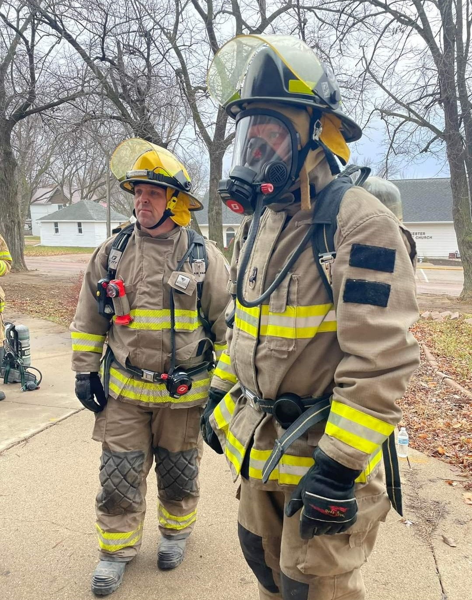
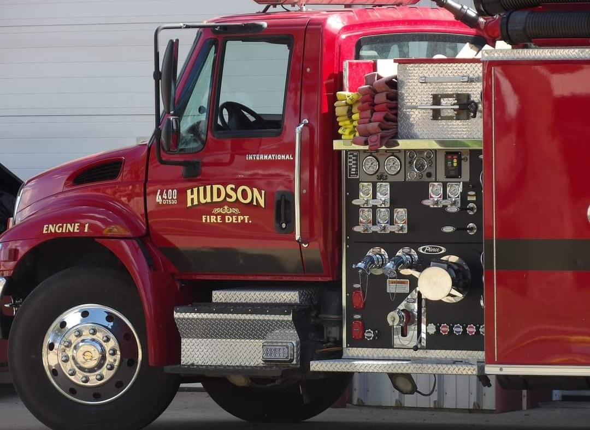
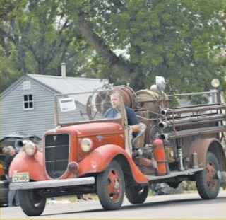
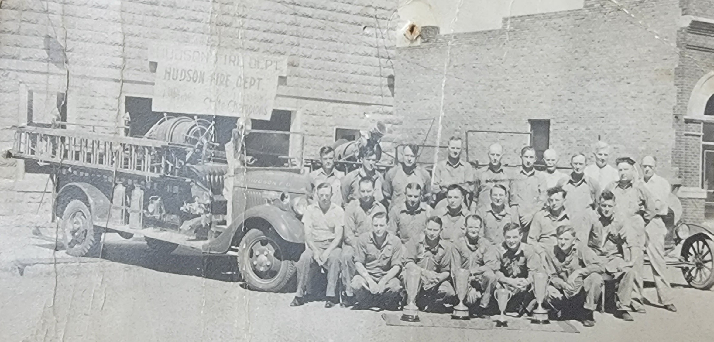
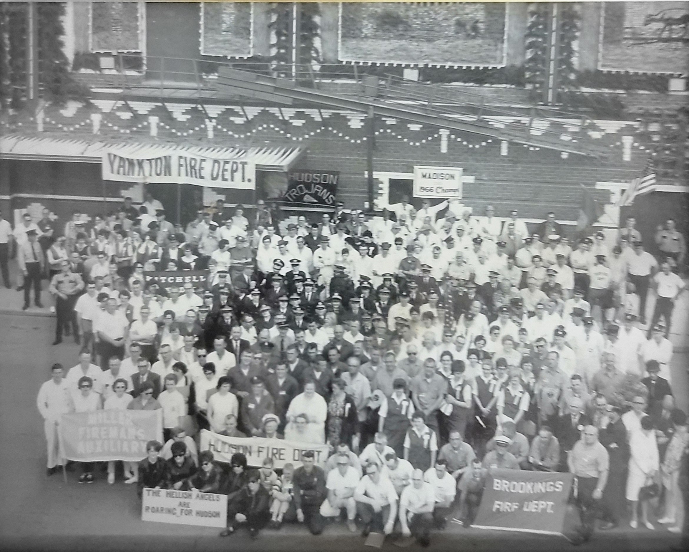
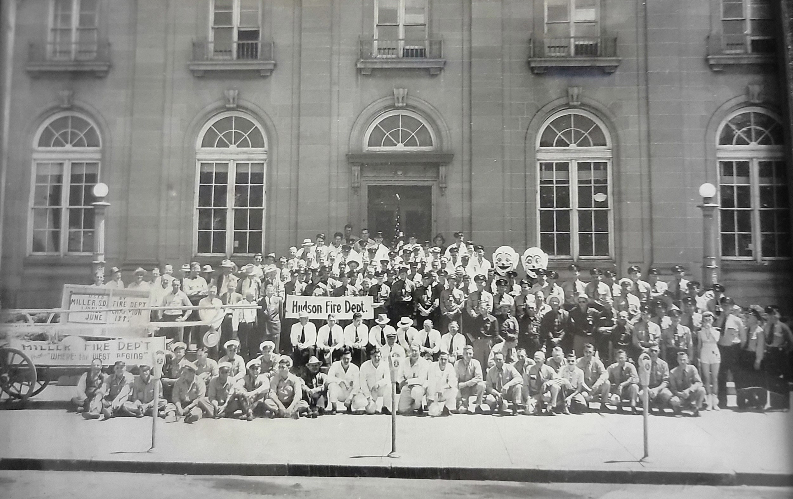
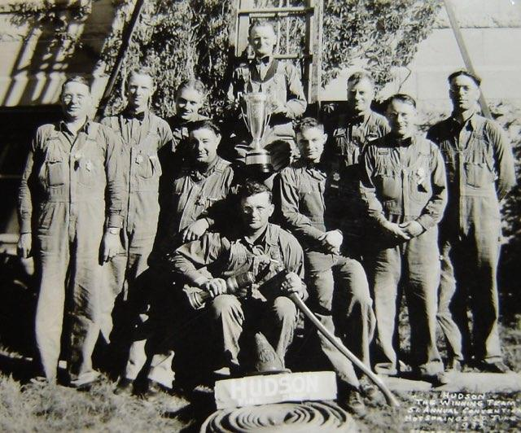
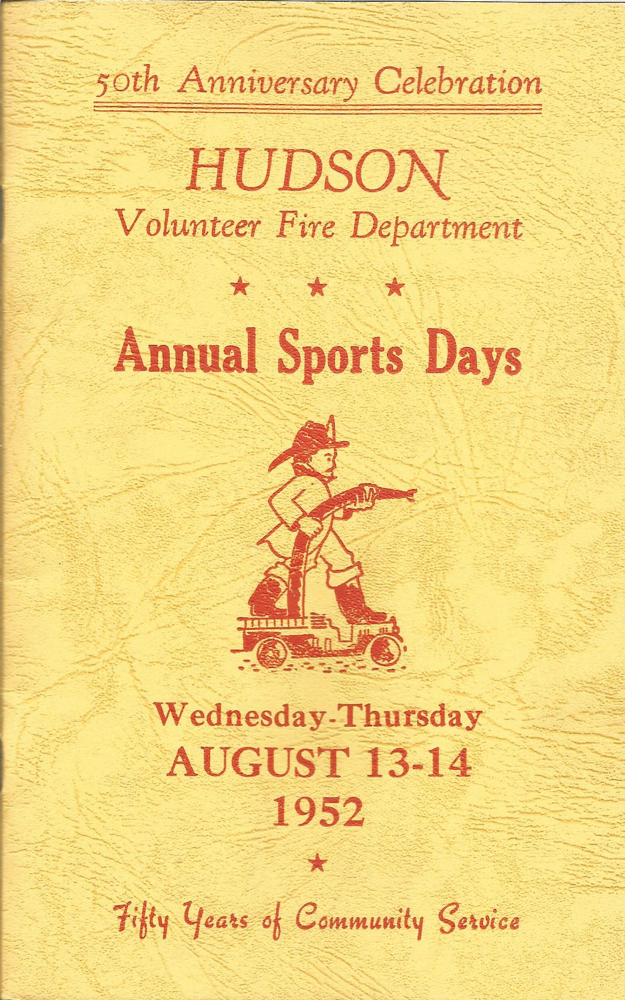
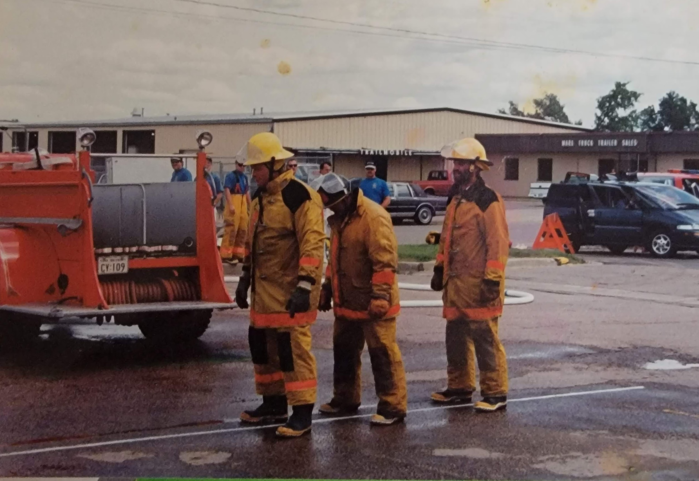
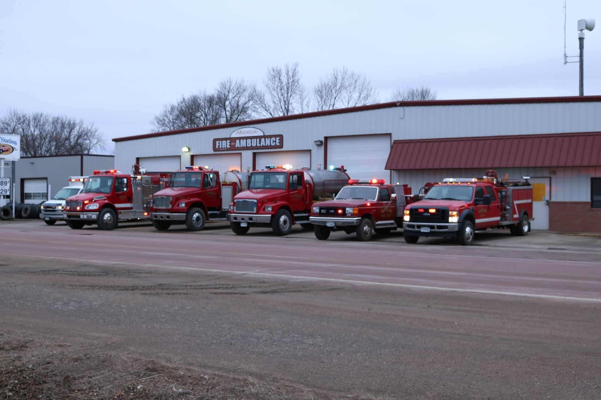

1902
The Hudson Fire Department was formed on October 2nd, 1902.






The town of Hudson is a small, rural town located in Lincoln County, South Dakota. Hudson is known for being the easternmost town in the state. We are home to the Alcester-Hudson School District.
When in town, be sure to check out Waddy's Bar and Grill and the Buckaroo, the Hudson Community Center, Hudson Meats and Sausage, Inc., and Dakota Prairie Woodworks.
In 1868, the first settlers arrived and name the town "Eden." By 1878, the Chicago, Minneapolis, and St. Paul Railway had begun construction, attracting new settlers. Historically, the town was separated into two territories, "Old Eden" and "New Eden."
In 1892, the town was renamed to Hudson, after being repeatedly confused with a nearby town called Egan.
Other prominent events in the history of the town include the creation of the Hudson's first school in 1878, the birth of Amanda Clement, the first paid woman umpire in 1888, and the the opening of Hudson's first library in 1925.

The Hudson Fire Department was formed on October 2nd, 1902.

The first "fire whistle" for the department is purchased, citing an upgrade in equipment.

The first boots and raincoats were purchased, offering firefighters extra protection on the job.

The "noon fire whistle" is blown for the first time.

Over the decades, the department expanded from volunteer crews to a fully staffed professional service with advanced equipment and training.

The Hudson Volunteer Fire Department celebrates its 50th Anniversary.

By 1988, the department had been South Dakota Firefighters Association Evolution Champions twenty-two times, and had been the Firemen's Auxiliary Champions twice. These awards were given in honor of service and completion of challenges issued throughout the state.

Today, we proudly serve our community with modern fire engines, EMS units,and highly trained firefighters committed to safety and prevention.